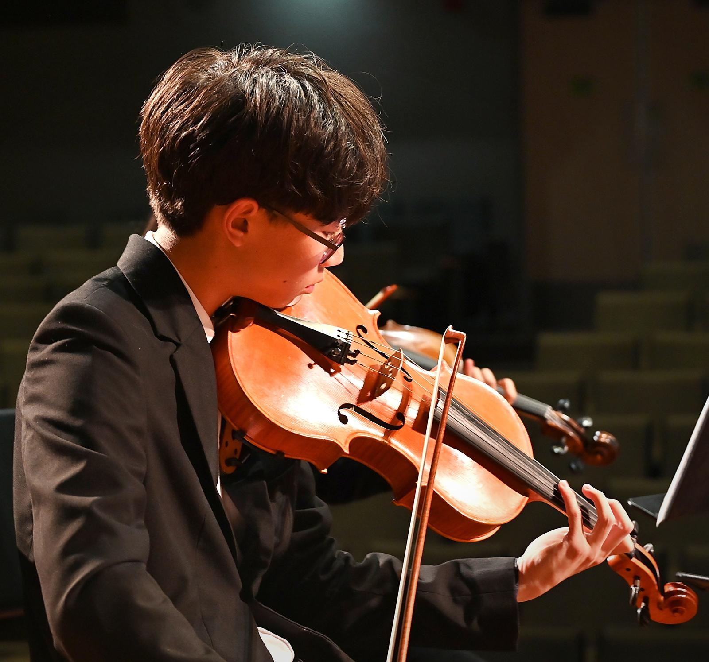
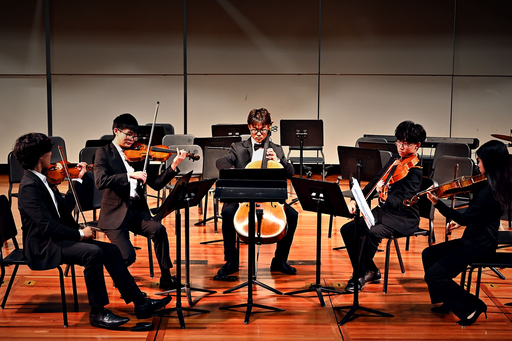
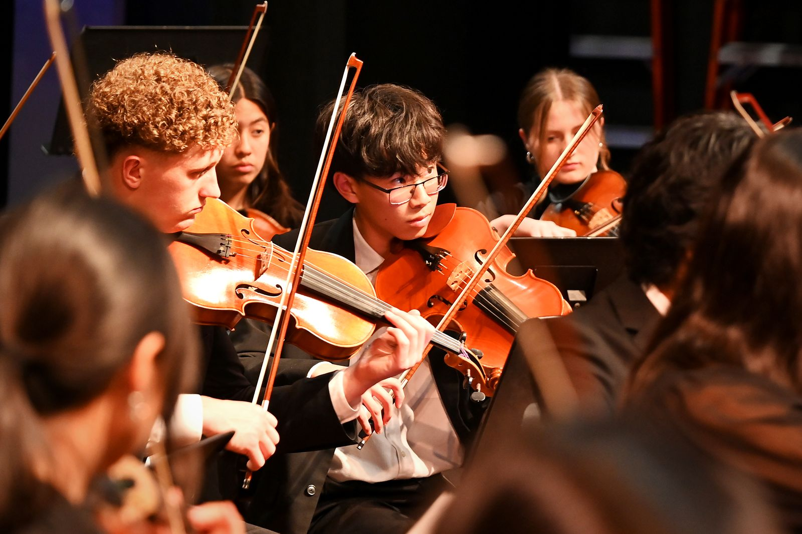
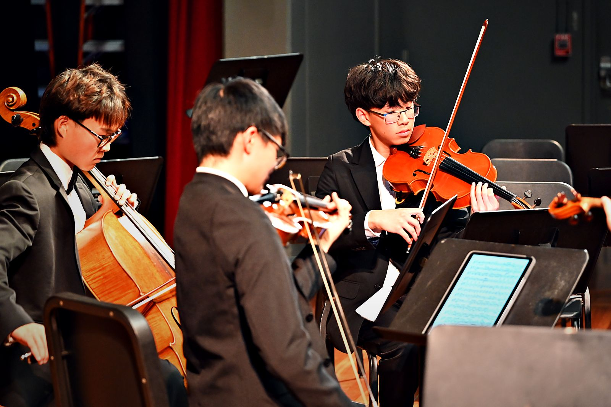
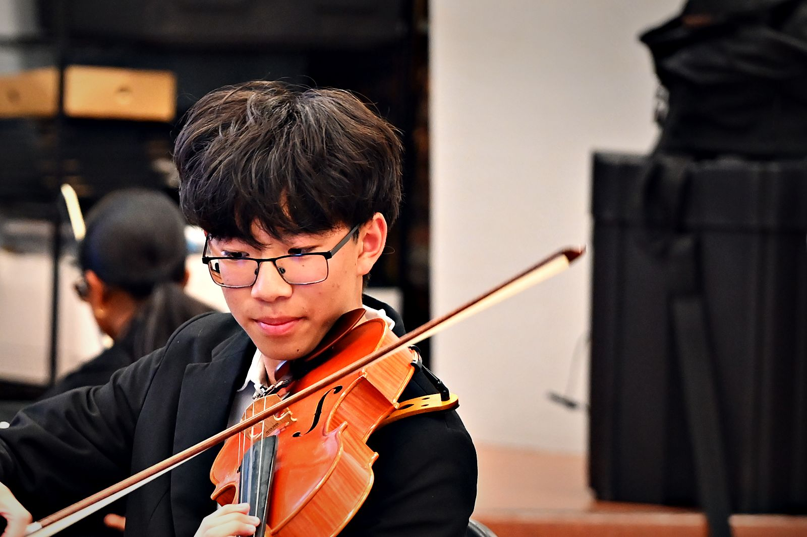
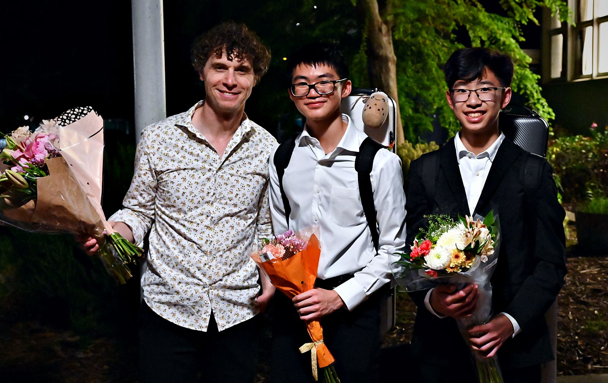
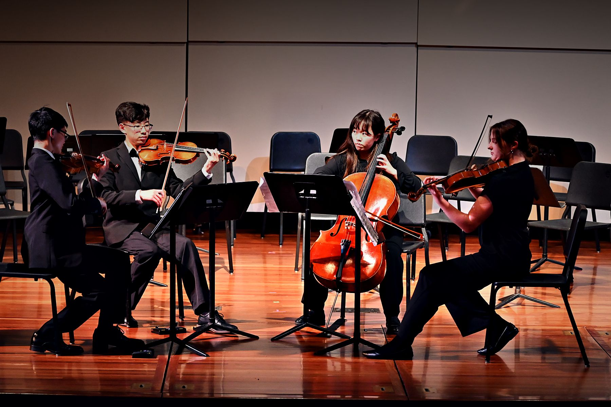

Gavin
Chang
Chamber and orchestral musician, finding the voice in the middle of the music.

Gallery






About
Gavin Chang is a violist and violinist from the San Francisco Bay Area. He currently plays viola in Senior PACO, the most advanced ensemble of the Palo Alto Chamber Orchestra.
Gavin has played violin for seven years and viola for two. During the 2025–26 season, he played violin in PACO's Sinfonia Orchestra and served as concertmaster for its March concert; this fall, he joined Senior PACO as a violist.
At Adrian Wilcox High School, Gavin has played in the Advanced Orchestra since ninth grade and has served as principal violist since 2025. As one of PACO's Pedagogical Ambassadors, he also coaches younger string players, a role that asks him not only to play the music he loves but to explain it.
Away from the viola, Gavin plays tennis, listens to a wide variety of music, and serves as an enthusiastic, if somewhat opinionated, food critic.
- PACO Senior OrchestraViola · 2026–present
- PACO Sinfonia OrchestraViolin · 2025–26 · Concertmaster, March 2026
- PACO Pedagogical AmbassadorsMentor to younger musicians · 2025–present
- Adrian Wilcox High SchoolPrincipal viola, Advanced Orchestra · 2025–present
Contact
Get in touch
For lessons, performances, private events or chamber collaborations, send a short note below. Every message is read personally, with a reply within a few days.